Les captures montrent un personnage d'exemple, « Osmo le Chanceux », et son compagnon Karoo.
1. Installer et mettre à jour l'application
L'application n'est pas sur le Play Store : elle s'installe à partir d'un fichier VivreCard-vX.Y.Z.apk (par exemple VivreCard-v0.1.0.apk), envoyé par le MJ ou téléchargé sur github.com/Jean-CharlesBoe/One-Piece/releases (dernière version « Vivre Card », partie Assets). C'est sans danger, mais Android demande une autorisation la première fois.
Première installation
Sur ton téléphone Android, touche le fichier VivreCard-vX.Y.Z.apk pour le télécharger. Attends la fin du téléchargement.
Ouvre le fichier : touche la notification « Téléchargement terminé », ou va dans l'application Fichiers → Téléchargements.
Android indique que ton téléphone n'est pas autorisé à installer des applications inconnues : touche Paramètres, active Autoriser depuis cette source, puis reviens en arrière (flèche ←).
Touche Installer.
Si Play Protect affiche « application inconnue » : touche Plus d'infos, puis Installer quand même. C'est normal pour une application qui ne vient pas du Play Store.
Touche Ouvrir. Vivre Card apparaît ensuite avec tes autres applications.
Le message d'autorisation (étape 3) peut nommer ta messagerie, Fichiers ou ton navigateur, selon l'endroit d'où tu ouvres le fichier : autorise celui qui est affiché. Tu peux ensuite retirer cette autorisation dans les paramètres, l'application reste installée.
Mettre à jour
Quand le MJ annonce une nouvelle version, refais les étapes 1 et 2, puis touche Mettre à jour. La nouvelle version s'installe par-dessus l'ancienne et garde tous tes personnages. Le numéro de la version installée est écrit en bas de l'écran d'accueil.
Ne désinstalle jamais l'application pour la mettre à jour : la désinstaller efface les fiches enregistrées sur le téléphone. Si tu dois vraiment la désinstaller, fais d'abord une sauvegarde (partie 11).
Où sont mes données ?
Tes personnages sont enregistrés dans le téléphone, pas sur internet : l'application fonctionne sans connexion, et personne d'autre n'y a accès. En contrepartie, c'est à toi de faire une sauvegarde de temps en temps (un seul bouton, partie 11).
2. L'écran d'accueil et les réglages
C'est la liste de tes personnages.
Créer un personnage : écris son nom dans le champ du haut et touche Créer. Sa fiche s'ouvre directement.
Ouvrir une fiche : touche le personnage. Sa photo (ou son initiale) l'identifie d'un coup d'œil, avec sa race et sa classe.
Supprimer : touche Supprimer puis, pour confirmer, Confirmer dans les 4 secondes. La suppression est définitive.
La roue dentée ⚙ en haut à droite ouvre les réglages :
Sauvegarde : sauvegarder ou importer tes fiches (partie 11) ;
Thème : Automatique (comme ton téléphone), Clair ou Sombre ;
Affichage : afficher ou masquer les petits boutons « i » qui rappellent les règles.
Tout en bas de l'accueil : le numéro de version de l'application.
Le bouton retour du téléphone ferme d'abord une fenêtre ouverte, puis revient à la liste, puis quitte l'application.
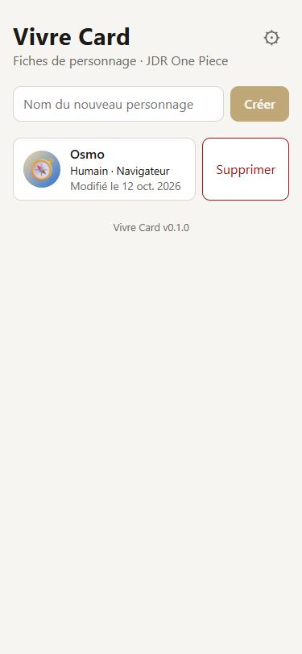
L'accueil : la liste des personnages.
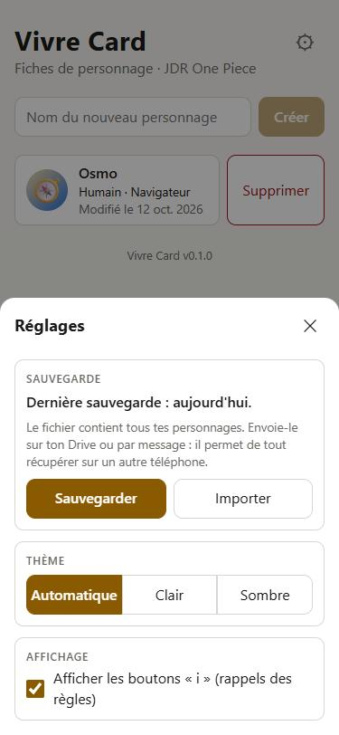
La roue dentée : sauvegarde, thème, affichage.
3. La fiche
En haut, la flèche ← revient à la liste, le crayon ✎ passe en mode édition (partie 5) et le bouton ⋮ ouvre le menu (partie 10). Juste en dessous, quatre onglets : Fiche, Compétences, Compagnons et Carnet. Tout s'enregistre automatiquement, il n'y a pas de bouton « Enregistrer ».
Info, fruit du démon et caractéristiques.
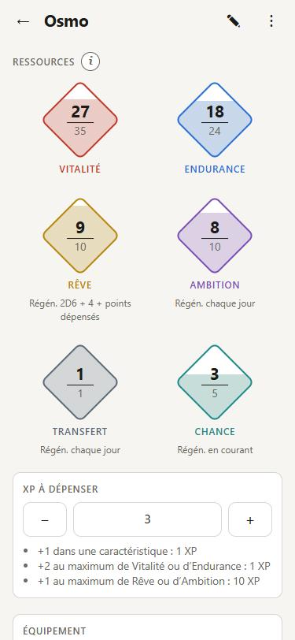
Ressources et expérience.
Info : la photo, le surnom, la race (et la tribu pour un Humain), la classe, l'âge, le rêve et la prime.
Fruit du démon : touche le bloc pour lire sa description. Voir les techniques ouvre les compétences d'origine « Fruit ».
Caractéristiques : le nombre dans le cercle est la valeur finale, bonus temporaires compris (vert s'il y a un bonus, rouge s'il y a un malus). La pastille indique les avantages (+1 = une relance) ou les désavantages.
Ressources : Vitalité, Endurance, Rêve, Ambition (Humains seulement), Transfert et tes ressources personnelles (Chance dans l'exemple). Chaque losange affiche « actuel / maximum ».
Expérience, Équipement et Inventaire : tout en bas, modifiables à tout moment. L'argent (berries) se note dans l'inventaire.
Les petits boutons « i » à côté des titres rappellent la règle du bloc. Tu peux les masquer dans les réglages (roue dentée de l'accueil).
4. Pendant la partie
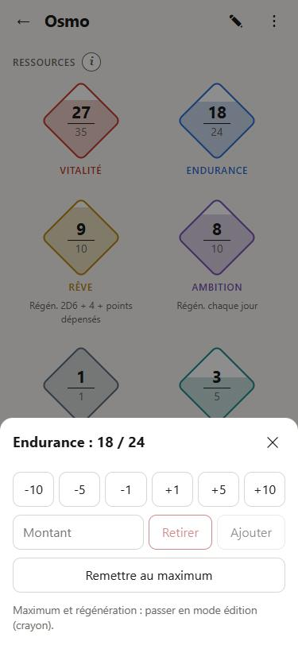
Toucher un losange : dépenser ou récupérer.
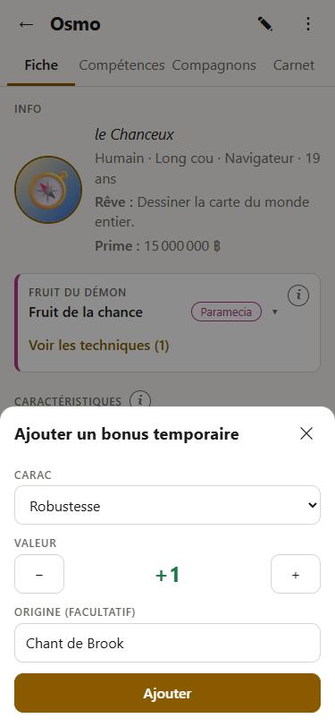
« + Bonus » : ajouter un bonus temporaire.
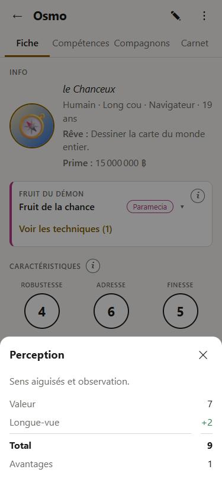
Toucher un cercle : le détail du calcul.
Dépenser ou récupérer une ressource
Touche un losange : −10, −5, −1, +1, +5, +10, ou un montant libre avec Retirer / Ajouter, ou Remettre au maximum. Une ressource ne descend jamais sous 0 et ne dépasse jamais son maximum. Quand tu utilises une compétence, retire son coût dans le losange Endurance. Si l'Endurance tombe à 0, un bandeau « Évanoui » apparaît.
Le Transfert vaut 1 : passe-le à 0 quand tu l'utilises, et remets-le au maximum le lendemain. Fais de même pour l'Ambition, qui se recharge chaque jour.
Bonus temporaires
+ Bonus : choisis la caractéristique, la valeur (+ ou −) et, si tu veux, l'origine (« Chant de Brook »). Le bonus s'ajoute au cercle jusqu'à ce que tu le retires avec la croix ✕.
Le détail d'une caractéristique
Touche un cercle : la description de la caractéristique, sa valeur, chaque bonus, le total et les avantages.
5. Le mode édition
Le crayon ✎ en haut à droite passe en mode édition (un bandeau « Mode édition » s'affiche) ; touche ✓ quand tu as fini. C'est là que tu modifies tout ce qui ne bouge pas en partie.
Caractéristiques : touche le cercle pour taper la valeur, ou − / + ; ligne « Av. » pour les avantages.
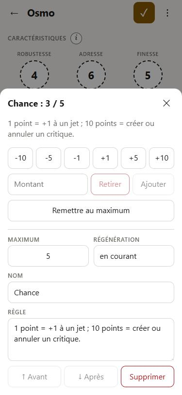
Dans un losange : maximum, régénération, et pour une ressource personnelle son nom et sa règle.
Fruit du démon : + Fruit du démon pour le décrire (nom, type, description, éveil), Retirer le fruit en deux temps.
Ressources : touche un losange pour régler son maximum et sa régénération. + Ressource ajoute une ressource propre à ton personnage ; dans sa fenêtre, tu règles son nom, sa règle, son ordre (↑ Avant, ↓ Après) ou tu la supprimes.
L'application ne vérifie pas les règles de création : tu saisis tes valeurs librement.
6. La photo du personnage et des compagnons
Passe en mode édition (crayon ✎).
Touche le rond + Photo à côté du nom, puis choisis l'appareil photo ou une image de ta galerie.
Place le visage dans le cercle : fais glisser la photo avec un doigt, zoome avec deux doigts ou avec le curseur, puis touche Valider.
En mode jeu, touche la photo pour la voir en grand. En mode édition, la même fenêtre propose Changer la photo, Recadrer et Retirer.
La photo apparaît aussi en miniature dans la liste d'accueil et dans celle des compagnons. Elle est enregistrée avec la fiche, donc incluse dans la sauvegarde.
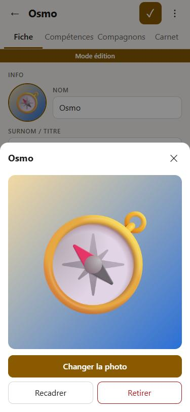
La photo en grand, en mode édition.
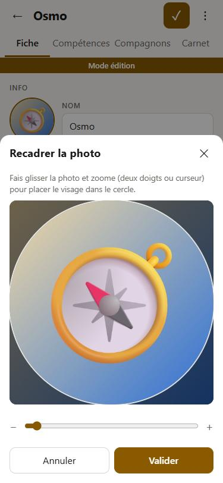
Le recadrage : glisser et zoomer.
7. L'onglet Compétences
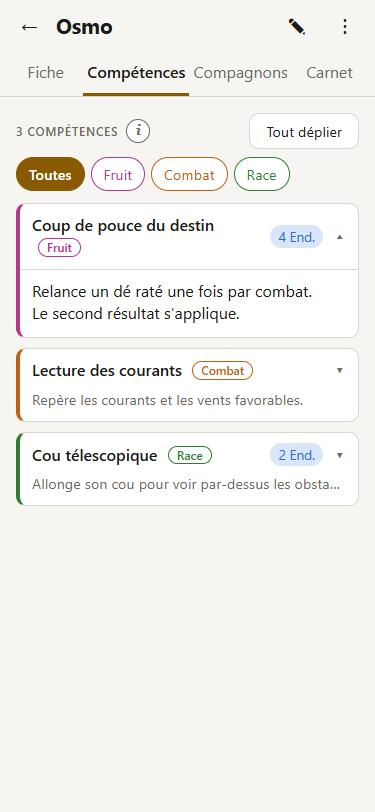
En partie : les cartes repliées, une carte dépliée.
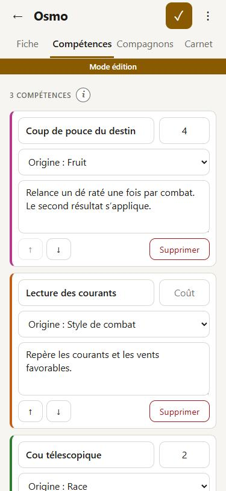
En mode édition : titre, coût, origine, description.
Chaque carte montre le titre, l'origine (Fruit, Combat, Race, Haki, Autre), le coût en Endurance et la première ligne de la description. Touche-la pour lire la description complète ; Tout déplier ouvre toutes les cartes.
Les boutons du haut filtrent la liste par origine.
Quand tu utilises une compétence, retire toi-même son coût dans le losange Endurance de la fiche.
En mode édition : + Ajouter une compétence, puis titre, coût (facultatif), origine et description ; ↑ ↓ pour l'ordre ; Supprimer en deux temps.
8. L'onglet Compagnons
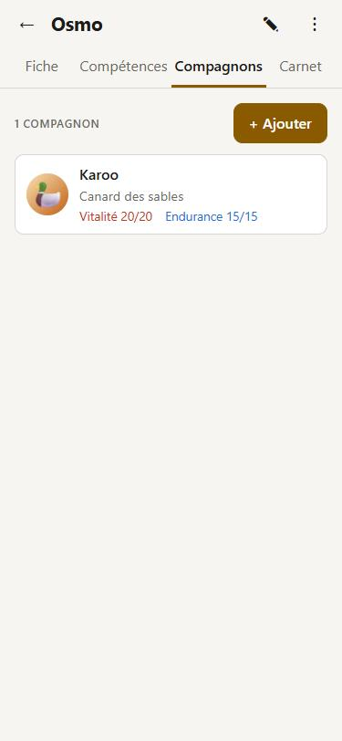
La liste, avec la Vitalité et l'Endurance de chacun.
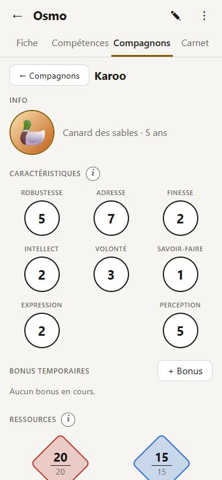
La fiche d'un compagnon.
+ Ajouter : donne un nom à ton compagnon (animal, monture, Den Den Mushi…) ; sa fiche s'ouvre.
Sa fiche est la même que celle d'un personnage : photo, info, fruit du démon, caractéristiques, bonus, ressources, expérience, équipement, inventaire, puis ses compétences sur la même page.
Sa race peut être une race jouable ou une autre : choisis Autre race… et écris-la (« Canard des sables »).
← Compagnons revient à la liste. En mode édition, ↑ ↓ change l'ordre et Supprimer ce compagnon le retire, en deux temps.
9. L'onglet Carnet : Lore et Histoire
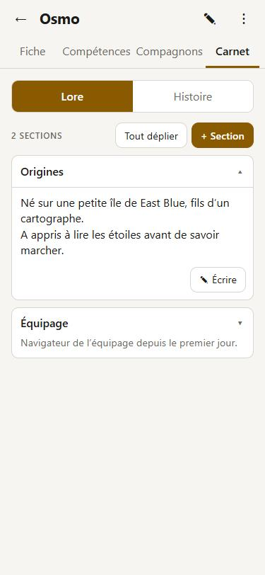
Le Lore : une carte par section.
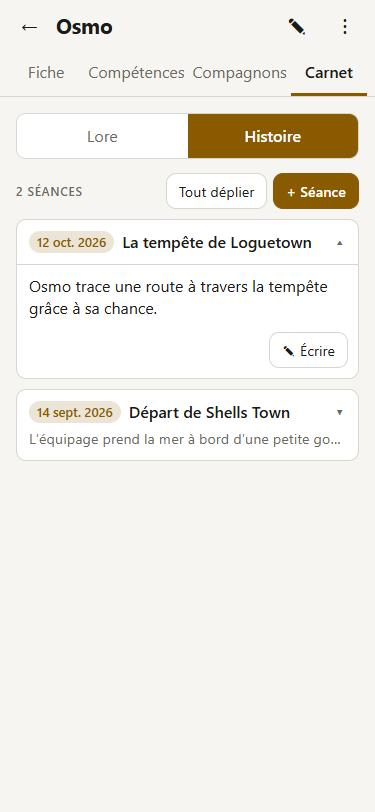
L'Histoire : une entrée par séance.
Lore : l'histoire de ton personnage, en sections (Origines, Famille, Équipage…). + Section en crée une.
Histoire : une entrée par séance, avec sa date ; la plus récente est en haut. + Séance crée une entrée à la date du jour.
Tu peux écrire à tout moment, même en mode jeu : touche une entrée pour la lire, puis ✎ Écrire pour la compléter, et Terminé quand tu as fini.
En mode édition : changer l'ordre des sections ou supprimer une entrée (en deux temps).
10. Le menu de la fiche et l'aide-mémoire
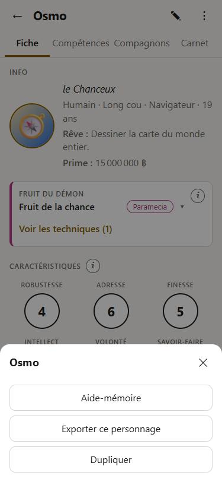
Le bouton ⋮ de la fiche.
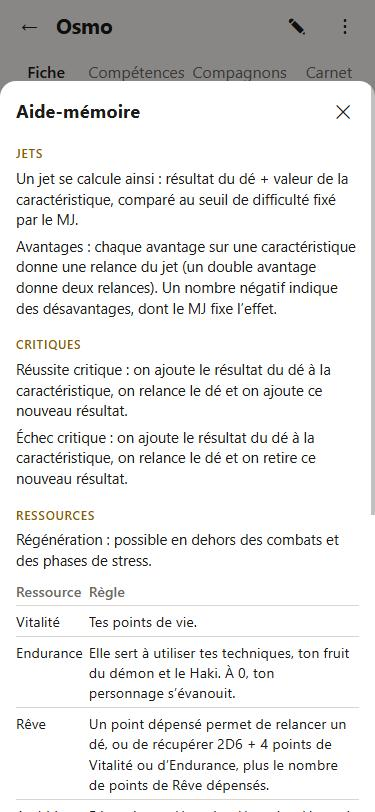
L'aide-mémoire des règles.
Aide-mémoire : le calcul d'un jet, les avantages, les réussites et échecs critiques, les ressources et les coûts de l'expérience.
Exporter ce personnage : un fichier pour ce seul personnage, par exemple pour l'envoyer sur un autre téléphone.
Dupliquer : crée une copie du personnage, nommée « (copie) ».
11. Sauvegarder et retrouver ses fiches
Tes fiches restent dans ton téléphone. Elles survivent aux mises à jour, mais pas à une désinstallation, ni à la perte ou au changement de téléphone. Le fichier de sauvegarde est ta vraie protection.
Sauvegarder
Accueil → roue dentée ⚙ → Sauvegarde → Sauvegarder.
La fenêtre de partage d'Android s'ouvre : choisis Drive, ou envoie-toi le fichier par mail ou par message. Le fichier contient tous tes personnages, avec leurs compagnons, leurs photos et leur carnet.
Un message rouge apparaît sur l'accueil si tu n'as jamais sauvegardé, ou si tu as modifié tes fiches sans sauvegarder depuis 7 jours ou plus.
Retrouver ses fiches
Sur un nouveau téléphone (ou après une réinstallation) : installe l'application, puis roue dentée ⚙ → Importer → choisis ton fichier. Pour une fiche déjà présente sur le téléphone, tu choisis Remplacer, Garder les deux ou Ignorer.